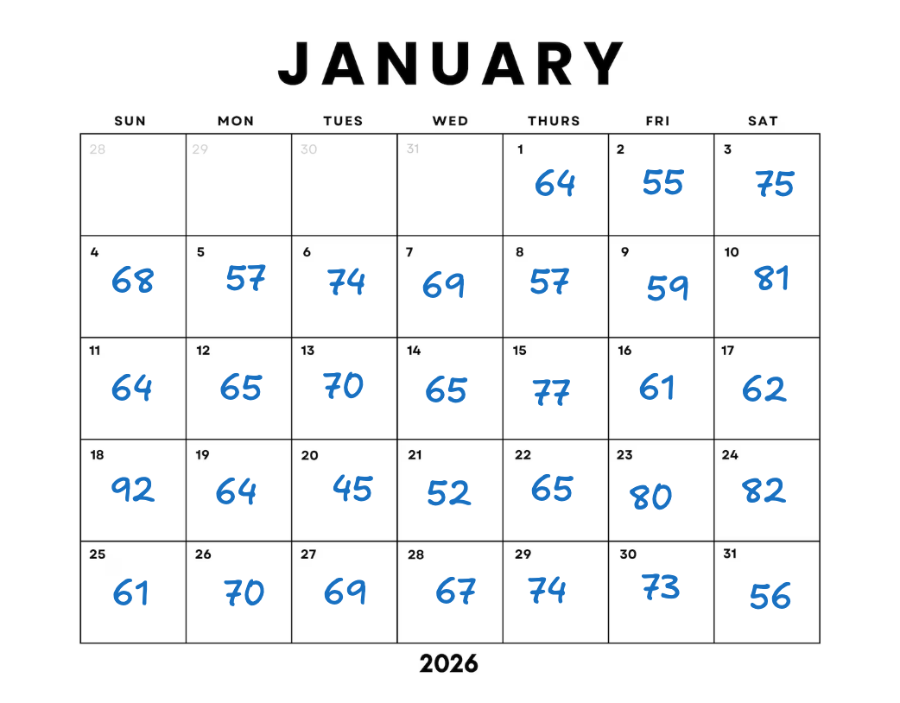
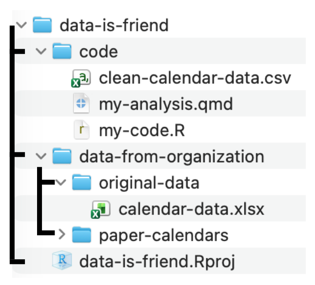

Handout 4: Data Is Friend
Understanding your data context
Today we’ll work with data from a community meal program. Volunteers record the number of meals served each day by writing the counts on a paper calendar. Later, someone enters those counts into a spreadsheet so they can summarize activity and report trends.
Throughout this activity, you’ll follow the same data as it changes form from handwritten notes, to a wide spreadsheet (calendar-data.xlsx), to a long dataset (clean-calendar-data.csv) that is ready to visualize and analyze in R.
Before we write code, pause and ask: data about whom, collected by whom, and for what purpose?
Look at the paper version of the meal counts for the month of January.
Fill in your first impressions:
- Who or what is this data about? ______________________________
- Who might have collected it? _________________________________
- What does one number seem to represent? ______________________
- What context would you want before analyzing it? ______________
Now look at the spreadsheet version.
library(readxl)
meal_counts_original <- read_excel("<PATH-TO-DATA>/04-calendar-data.xlsx")
meal_counts_original# A tibble: 5 × 8
week_start Sunday Monday Tuesday Wednesday Thursday Friday Saturday
<dttm> <dbl> <dbl> <dbl> <dbl> <dbl> <dbl> <dbl>
1 2025-12-28 00:00:00 NA NA NA NA 64 55 75
2 2026-01-04 00:00:00 68 57 74 69 57 59 81
3 2026-01-11 00:00:00 64 65 70 65 77 61 62
4 2026-01-18 00:00:00 92 64 45 52 65 80 82
5 2026-01-25 00:00:00 61 70 69 67 74 73 56- What does one row represent? _________________________________
- What does one column represent? ______________________________
Reading in the data & following file paths
For each prompt below:
- Star the working directory folder, your “home base.”
- Draw the route from the desired data set to your home base.
- Match the correct code and file path you would use to read in the data.
NoteFile Path Bank
readxl::read_excel("../data-from-organization/original-data/calendar-data.xlsx")
readxl::read_excel("data-from-organization/original-data/calendar-data.xlsx")
read_excel("calendar-data.xlsx")
read_csv("clean-calendar-data.csv")
read_csv("data-from-organization/original-data/clean-calendar-data.csv")
read_csv("../clean-calendar-data.csv")Prompt 1: You are working within my-code.R and want to read in calendar-data.xlsx.

Code I would use:
Prompt 2: You are working within my-analysis.qmd and want to read in calendar-data.xlsx.
Code I would use:
Prompt 3: You are working within my-analysis.qmd and want to read in clean-calendar-data.csv.
Code I would use:
Exploring the data structure
Here, we read in the longer version of the meal-count data (clean-calendar-data.csv).
library(readr)
meal_counts <- read_csv("<PATH-TO-DATA>/clean-calendar-data.csv")Use R to explore the data and answer each question:
class(meal_counts)[1] "spec_tbl_df" "tbl_df" "tbl" "data.frame" names(meal_counts)[1] "week_start" "date" "weekday" "meal_count"
[5] "avg_temp_f" "gas_price_usd"head(meal_counts, n = 6)# A tibble: 6 × 6
week_start date weekday meal_count avg_temp_f gas_price_usd
<chr> <chr> <chr> <dbl> <dbl> <dbl>
1 12/28/25 1/1/15 Thursday 64 58 3.45
2 12/28/25 1/2/15 Friday 55 60 3.46
3 12/28/25 1/3/15 Saturday 75 61 3.46
4 1/4/26 1/4/15 Sunday 68 59 3.46
5 1/4/26 1/5/15 Monday 57 57 3.47
6 1/4/26 1/6/15 Tuesday 74 56 3.48tibble::glimpse(meal_counts)Rows: 31
Columns: 6
$ week_start <chr> "12/28/25", "12/28/25", "12/28/25", "1/4/26", "1/4/26", …
$ date <chr> "1/1/15", "1/2/15", "1/3/15", "1/4/15", "1/5/15", "1/6/1…
$ weekday <chr> "Thursday", "Friday", "Saturday", "Sunday", "Monday", "T…
$ meal_count <dbl> 64, 55, 75, 68, 57, 74, 69, 57, 59, 81, 64, 65, 70, 65, …
$ avg_temp_f <dbl> 58, 60, 61, 59, 57, 56, 55, 58, 60, 62, 61, 59, 58, 57, …
$ gas_price_usd <dbl> 3.450, 3.455, 3.460, 3.465, 3.470, 3.475, 3.480, 3.485, …summary(meal_counts) week_start date weekday meal_count avg_temp_f
Length :31 Length :31 Length :31 Min. :45.00 Min. :55.0
N.unique : 5 N.unique :31 N.unique : 7 1st Qu.:61.00 1st Qu.:58.0
N.blank : 0 N.blank : 0 N.blank : 0 Median :65.00 Median :60.0
Min.nchar: 6 Min.nchar: 6 Min.nchar: 6 Mean :66.87 Mean :59.9
Max.nchar: 8 Max.nchar: 7 Max.nchar: 9 3rd Qu.:73.50 3rd Qu.:61.5
Max. :92.00 Max. :65.0
gas_price_usd
Min. :3.450
1st Qu.:3.487
Median :3.525
Mean :3.525
3rd Qu.:3.562
Max. :3.600 - What is the name of the data set object in the R environment? _________________
- What kind of R object is
meal_counts? _______________________ - How many rows are in the data? _______________________________
- How many columns are in the data? ____________________________
- What does one row represent now? _____________________________
- Which variables are numeric? _________________________________
- Which variables are categorical and give context? _________________________________
Shape-shifting data
The same information can be shaped into different rectangles. Complete the comparisons:
| Version | One row represents… | One column represents… | Best for… |
|---|---|---|---|
| Paper calendar | __________ | __________ | Recording meals |
| Spreadsheet/wide data | __________ | __________ | Sharing with coworkers/storing virtually |
| Longer data | __________ | __________ | Certain analysis in R |